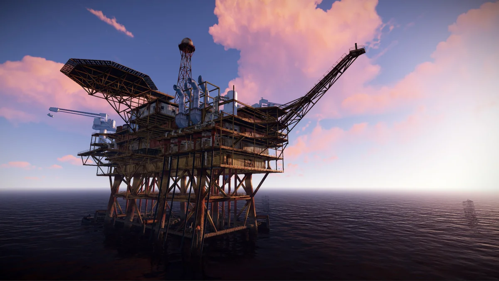

Нефтевышка
Самое лучшее место для фарма в игре Rust 10 апреля 2020 1K прочитали Как мы все знаем , в Rust без фарма никуда, существует множество мест где можно найти ценный лут, в данной статье хочу отметить одни самые лучшие из этих мест. Оценка будет происходить по 3 критериям( ценность лута , возможные траты , и доступность к луту). Нефтевышка Данное место славиться своей отдаленностью от остальных РТ(Red Town)тем не менее игроков там встретить не составит большого труда. На нефтевышке большое кол-во NPC которые так и жаждят вашей смерти , отстреляв всех NPC и активировав желанный ящик с лутом , который открывается 15 минут , к вам нагрянет вертолет с более сильными NPC которых тоже нужно будет убить. И сделать это достаточно просто.Заходите в любое здание , за любую стену , и они по 1-2 пойдут на вас , запаситесь шприцами - Наполненность лутом: 6/10 т.к в большинстве случаев лут бесполезен.
- Возможные траты: Патроны - около 300 шт. Мед. шприц - 50 шт
- Доступность к луту: 5/10 т.к этот лут не окупает потерянные 20-30 мин.